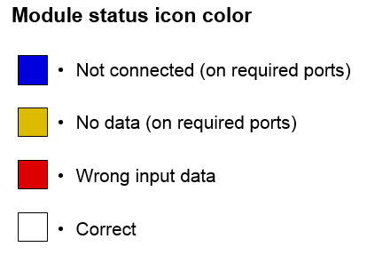

|
|
|
WORKSPACE PANEL
The Workspace Panel is a place for creating modules (triggering wywoływanie) and networking them by dragging lines between their ports.
There are 4 ways of creating modules on Workspace Panel:
After starting VisNow there is only Viewer3D module placed at the bottom of workspace.
Modules may consist of:
Colours of input and output ports refer to their data type.
Shapes of input ports depend on necessity of connecting them. If input port is required to run the module, then it will protrude over the margin of module. Red colour of the line above required input port means that there is no connection and yellow one – there is connection, but no data.
Shape of output port depends on the presence of data in it.
Clicking RMB on port opens port menu which may contain:
Output Port Wizard can be expanded by selecting Attach from port menu. It allows creating new module, which will be automatically connected to current port. The provided list is filtered and shows only modules that can process data from this output port. Double-clicking a module from the tree connects it.
Selecting Show detailed info opens Show Detailed Info Window. Appearance of this window depends on whether it is an input or on output port.
The first section provides information about what kind of port it is (input or output) and short description of port (“Description:”). The next paragraph (“Type:”) gives information what type of data will be produced or what data is needed. Last section of input port (“Requires:”) contains special acceptors which are needed to run the module. At least one acceptor from the list must be requisite. Produced data coming from output port must satisfy at least one acceptor of input port. Last section of output port (“Produces:”) gives information about what data is going to be produced.

Show content shows Info window (for more information on about Show Content Window see: VisNow Data Types).
Module has its Module menu. Module menu can be opened by clicking RMB on module box. Module menu includes:
Dark-blue colour of Status icon means that at least one of the necessary input ports is not connected. When all necessary input ports are connected, but still there is no data, the colour of Status icon changes to yellow. Red colour means that the data on one of the required inpout ports is not acceptable (wrong). White colour means that module is ready to run.

Progress bar refers to state of module. Light blue colour of Progress bar means that all necessary input ports of module are connected, but it is waiting for data. Partially green and partially yellow bar shows the stage of completion of action of module (only implemented in some long-acting modules). An entire yellow bar points out that module is working (but progress is not shown). Dark blue colour means that module has just finished working and is preparing output ports. When module is not working then the colour is white.
Module name can be changed in Module menu -> Rename.
Module can be selected by clicking LMB on module or in Module panel. Then module is highlighted and Module panel of current module is presented. Hereby, it is possible to change its parameters. Dragging module enables to move it on workspace.
Modules on Workspace can be connected if output port of one module is connectable to input port of another one. Two ports are connectable if input port and output port are of the same type and some additional requirements of input port are fulfilled. These additional requirements of input port called acceptors can be viewed in Show Detailed Info Window (click RMB on input port -> select Show detailed info -> section: “Requires:”). Also additional requirements of output port are presented in Show Detailed Info Window (click RMB on input port -> select Show detailed info -> section: “Produces:”).
Modules can be connected in 3 ways:
To connect two ports properly there is an input port facility. While dragging the mouse from output port of one module, compatible input ports of other modules are highlighted. When connection is impossible (data is incompatible), input port is highlighted in red. When there is no data on output port, connection is conditional. Then input port is highlighted in yellow. New data received from output port must have appropriate components (which can be accepted by input port). When data received from output port is compatible with all components of input port then input port is highlighted in green.
Connections between modules are forming network, which can be more or less complicated.
To see what kind of data is sent through connection, leave the cursor over the connection (or output port) and wait for the tooltip to appear (simplified information), or click LMB to highlight the connection and then click LMB and select Show Content ( see: VisNow Data Types).
Connection can be deleted in two ways:
There are 4 ways to run a module:
[Hint: Some modules have WAIT button, when pressed it allows modifying many parameters before running this module. This button is used when module works for quite a long time.]
[Hint: Some modules are off by default. Pressing COMPUTE button is required to run them.]
[Hint: Some modules are not induced by wave from network. Selecting AUTO in Module Panel runs the module when new data with appropriate components is delivered to input port.]
[Hint: When module is running, background is changing colour from black into slightly red.]
Module can be deleted by: